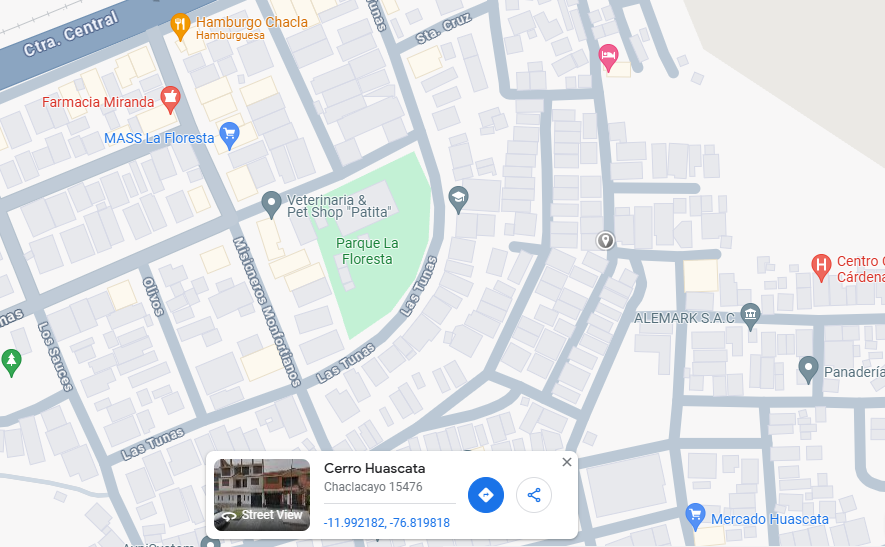

Desde su apertura en 2018, en el AA.HH Cerro Vecino Huascata, Bazar Yoli se ha destacado como un negocio local fundado por Yolanda León Ricapa. Con un firme propósito en mente, Yolanda estableció este bazar con la misión de llevar productos de calidad a precios accesibles a su comunidad. Inspirada por la necesidad de ofrecer una variedad de artículos esenciales en un solo lugar, Yolanda transformó su visión en realidad. Con más de 6 años de experiencia en el sector, hemos crecido constantemente gracias a nuestro compromiso con la excelencia y la satisfacción del cliente.

En Bazar Yoli, nos dedicamos a proporcionar un espacio acogedor donde cada visita sea una experiencia gratificante. Nos enorgullece ofrecer una amplia gama de productos, desde vestidos ligeros hasta utensilios de cocina, regalos especiales, material escolar y joyas deslumbrantes. Nos esforzamos por asegurar que cada artículo en nuestras estanterías cumpla con nuestros estándares de calidad, garantizando al mismo tiempo precios accesibles para nuestros clientes.
Desde los productos más básicos hasta los más especiales, en Bazar Yoli encontrarás todo lo que necesitas. Nuestro extenso inventario está diseñado para satisfacer las necesidades cotidianas de nuestra comunidad, convirtiéndonos en el destino ideal para encontrar desde un regalo único hasta los artículos esenciales para el hogar.
Nuestros principales clientes son los vecinos de la zona, quienes confían en nosotros para encontrar productos de calidad y asequibles cerca de casa. Valoramos cada interacción y nos esforzamos por superar las expectativas de quienes nos eligen como su tienda de confianza.
Estamos ubicados en Mz Q1 Lt 1, AA.HH Cerro Vecino Huascata, donde nos complace servir a nuestra comunidad día tras día. Visítanos y descubre por qué en Bazar Yoli, cada compra es más que una transacción; es una experiencia que nos enorgullece ofrecer.
